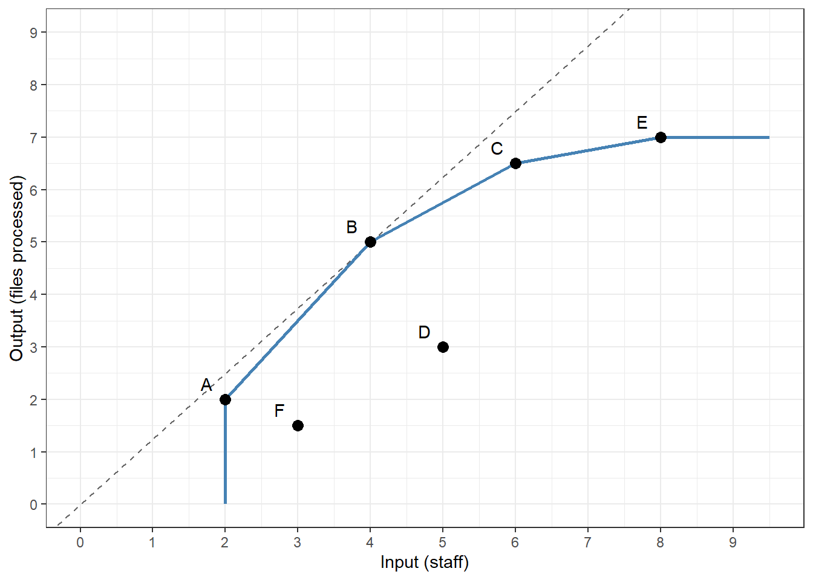
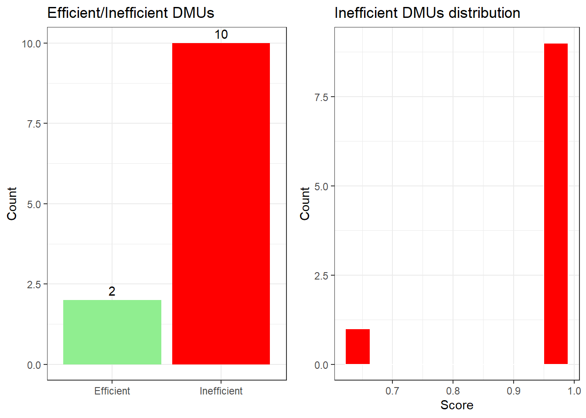
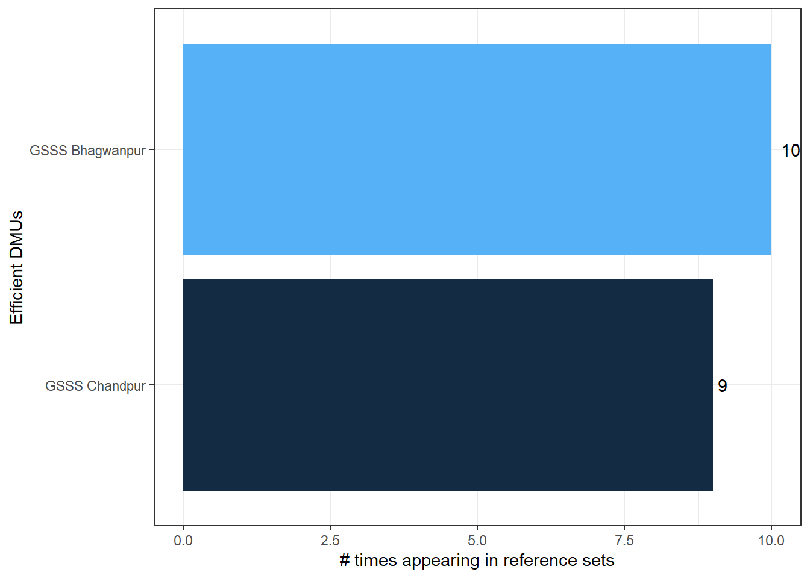
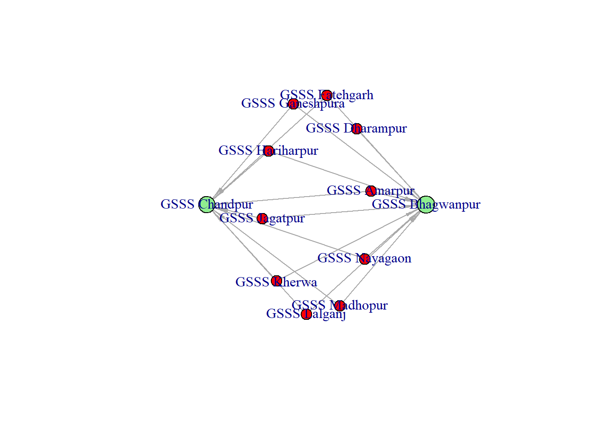
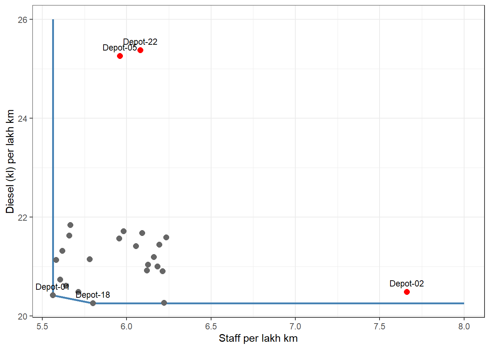

42 Data Envelopment Analysis
A district has 30 Community Health Centres. Each has some doctors, nurses and beds. Each treats patients and conducts deliveries. Some centres do much more with what they have. Some do much less. A performance audit wants to know which centres lag behind, by how much, and which records to examine first.
A simple ratio, like patients per doctor, answers part of this question. But a health centre has several inputs and several outputs. A centre may look good on patients per doctor and poor on deliveries per nurse. Which ratio should the auditor trust? And how do we add up patients and deliveries, which have no common price?
Data Envelopment Analysis (DEA) solves this problem. It measures the relative efficiency of a set of similar units, like bank branches, schools, hospitals, bus depots or offices. In DEA, these units are called decision-making units (DMUs). DEA finds the best performers in the group. It then compares every other unit with them, using all the inputs and outputs together. It does not need any prices or weights to be decided in advance.
For an auditor, DEA gives three things. It shows which units lag behind, and by how much. It shows which of the best units each weak unit should be compared with. And it gives targets, which turn the shortfall into numbers. These may be patients not treated, or diesel not needed, which can then be valued in rupees.
In this chapter we will first see the idea with a simple picture. We will then learn the functions of the deaR package on a small set of schools of a district. Two audit use cases follow. In the first, DEA finds weak health centres, and also a centre whose figures look too good to be true. In the second, it finds the excess diesel and staff of bus depots, and values them in rupees.
42.1 A little history
The idea goes back to M. J. Farrell, who in 1957 measured efficiency by comparing each unit with the best performers. Abraham Charnes, William Cooper and Edwardo Rhodes turned it into a practical method in 1978. Rhodes was then studying a large programme for disadvantaged school children in the United States. He had to compare schools which used several inputs, like teachers and funds, to produce several outputs, like test scores. There were no common prices to add them up. DEA was the answer. Since then, it has been used for banks, hospitals, police stations, ports, power plants and many other sectors.
42.2 How DEA works
Let us start with the simplest case, one input and one output. Suppose six offices, A to F, process files (output) with some staff (input). The office with the highest output per staff is the most efficient. Every other office can be compared with it. See the dashed line in Figure 42.1. It passes through the best office and the origin. This line is the efficient frontier, and the efficiency of every other office is how close it comes to this line.
Office B processes 5 files with 4 staff, which is the best rate, 1.25 files per staff. If we assume constant returns to scale (CRS), that is, doubling the staff should double the output, then every office should achieve this rate. Office D processes 3 files with 5 staff, a rate of 0.6. So its efficiency is \(0.6 / 1.25 = 0.48\), or 48%.
But bigger offices may not be able to keep the same rate as small ones, and very small ones may lack the staff to work efficiently. If we allow for this, we assume variable returns to scale (VRS). The frontier is then the solid line in Figure 42.1, which joins the best offices of each size, A, B, C and E. Each office is compared only with offices of a similar size. Under VRS, more offices are efficient, and the scores of the others are higher, or the same.
With many inputs and outputs, we cannot draw the frontier, but the idea is the same. DEA works out the efficiency of each DMU as
\[ \text{Efficiency} = \frac{\text{weighted sum of outputs}}{\text{weighted sum of inputs}} \tag{42.1}\]
The clever part is the choice of weights. DEA lets each DMU choose the weights which make it look as good as possible, with one condition. With these same weights, no DMU may have an efficiency above 1. If a DMU cannot reach 1 even with the weights most favourable to it, it is clearly inefficient. Finding these weights is a linear programming problem, solved separately for each DMU. R does all this for us.
Some terms we will meet are
- Efficient frontier. The best performing DMUs, which no other DMU or combination of DMUs beats. Their efficiency score is 1.
- Peers (or reference set). For an inefficient DMU, the efficient DMUs which it is compared with. A combination of the peers produces at least the same outputs with fewer inputs.
- Lambdas. The weights of the peers in this combination.
- Targets. The input and output levels at which the inefficient DMU would become efficient.
- Slacks. Extra reduction in a particular input (or increase in an output) needed even after the proportional reduction, to reach the target.
- Orientation. An input oriented model asks how much the inputs could be reduced while producing the same outputs. An output oriented model asks how much the outputs could be increased with the same inputs.
- Returns to scale. Constant (CRS) or variable (VRS), as explained above.
42.3 Where DEA helps in audit
DEA is a natural tool for performance audit, which asks whether resources are used economically, efficiently and effectively. It suits any set of units doing the same kind of work, like schools, health centres, anganwadi centres, bank branches, police stations, treasuries or depots. Some uses are
- Benchmarking units. Compare districts, offices, hospitals, schools or depots doing the same work. DEA shows which units lag behind, which of the best units they should learn from (their peers), and the targets they could reach.
- Selecting units for detailed audit. Units with low efficiency scores, and the ones at the frontier, can be chosen for field visits, instead of a purely random selection.
- Quantifying the shortfall. Targets tell us how much more output (patients treated, files cleared, revenue collected) was possible with the same resources, or how many resources were in excess. The excess can be valued in rupees. We will do this for bus depots in Section 42.7.
- Testing the reported data. DEA compares each unit with the best reported performance. If a unit reports outputs which are far too good to be true, DEA will put it on the frontier, and it will become the yardstick for others. Such a unit deserves a check of its records. We will see this with health centres in Section 42.6.
42.4 Prerequisites
We will use the package deaR to calculate DEA efficiency, and tidyverse to arrange the results.
42.5 A first model, schools of a district
Let us learn the functions of deaR on a small example from a school education audit.
42.5.1 Our sample data, twelve schools
An imaginary district has 12 Government Senior Secondary Schools (GSSS). For the year 2024-25, we have two inputs and two outputs for each school.
-
teachersis the number of teachers in position. -
grantis the composite school grant released to the school, in ₹ lakh. -
pass_10andpass_12are the numbers of students who passed the Class 10 and Class 12 board examinations.
We have planted two cases in this data. One school gets poor results for the teachers it has. Another receives far more grant than schools of its size. Let us see whether DEA finds them.
Code to create the school data
schools <- data.frame(
school = c("GSSS Amarpur", "GSSS Bhagwanpur", "GSSS Chandpur", "GSSS Dharampur",
"GSSS Fatehgarh", "GSSS Ganeshpura", "GSSS Hariharpur", "GSSS Jagatpur",
"GSSS Kherwa", "GSSS Lalganj", "GSSS Madhopur", "GSSS Nayagaon"),
teachers = c(24L, 31L, 18L, 27L, 22L, 35L, 20L, 29L, 30L, 25L, 19L, 33L),
grant = c(12.5, 15.0, 9.0, 13.5, 11.0, 17.5, 10.5, 14.0, 15.5, 19.0, 9.5, 16.0),
pass_10 = c(150L, 196L, 118L, 160L, 140L, 225L, 128L, 180L, 120L, 158L, 116L, 205L),
pass_12 = c(110L, 150L, 82L, 126L, 102L, 160L, 92L, 136L, 88L, 118L, 88L, 150L)
)knitr::kable(schools)| school | teachers | grant | pass_10 | pass_12 |
|---|---|---|---|---|
| GSSS Amarpur | 24 | 12.5 | 150 | 110 |
| GSSS Bhagwanpur | 31 | 15.0 | 196 | 150 |
| GSSS Chandpur | 18 | 9.0 | 118 | 82 |
| GSSS Dharampur | 27 | 13.5 | 160 | 126 |
| GSSS Fatehgarh | 22 | 11.0 | 140 | 102 |
| GSSS Ganeshpura | 35 | 17.5 | 225 | 160 |
| GSSS Hariharpur | 20 | 10.5 | 128 | 92 |
| GSSS Jagatpur | 29 | 14.0 | 180 | 136 |
| GSSS Kherwa | 30 | 15.5 | 120 | 88 |
| GSSS Lalganj | 25 | 19.0 | 158 | 118 |
| GSSS Madhopur | 19 | 9.5 | 116 | 88 |
| GSSS Nayagaon | 33 | 16.0 | 205 | 150 |
42.5.2 Performing DEA in R
Our objective is to find out which schools use their teachers and grants efficiently. We first assume constant returns to scale, that is, results should double if teachers and grants are doubled. We also take an input oriented view, asking how much the inputs could be reduced for the same results.
DEA in deaR is a two step process.
-
Step 1. We put the data in the form the package needs, using the function
make_deadata(). The argumentsinputs,outputsanddmustake the column numbers (or names) in the data. -
Step 2. We run the actual analysis using
model_basic(), which takes the data created in step 1 and two other essential arguments.-
orientationis a string,"io"(input oriented),"oo"(output oriented), or"dir"(directional). -
rtsis a string giving the type of returns to scale,"crs"(constant),"vrs"(variable),"nirs"(non-increasing),"ndrs"(non-decreasing) or"grs"(generalized). - Other arguments may be passed as needed. See
?model_basicfor more help.
-
school_dea <- make_deadata(schools, inputs = 2:3, outputs = 4:5, dmus = 1)
model <- model_basic(school_dea, orientation = 'io', rts = 'crs')The DEA model is now stored in model. We can use the functions efficiencies(), targets(), lambdas(), references() and slacks() to see its results.
round(efficiencies(model), 3) GSSS Amarpur GSSS Bhagwanpur GSSS Chandpur GSSS Dharampur GSSS Fatehgarh
0.973 1.000 1.000 0.964 0.988
GSSS Ganeshpura GSSS Hariharpur GSSS Jagatpur GSSS Kherwa GSSS Lalganj
0.989 0.988 0.984 0.622 0.990
GSSS Madhopur GSSS Nayagaon
0.962 0.979 Only 2 schools, Bhagwanpur and Chandpur, are on the frontier, with a score of 1. Most of the others are close behind, above 0.95. One school stands apart. GSSS Kherwa has a score of 0.622. In an input oriented model, this means Kherwa could produce its present results using only about 62% of its present teachers and grant, if it worked as well as the best schools. This is the first school we planted.
Which schools is Kherwa compared with? references() gives the peers of each inefficient school, with their lambdas. Let us look at Kherwa’s.
references(model)[["GSSS Kherwa"]]GSSS Bhagwanpur GSSS Chandpur
0.33415 0.46192 Kherwa’s peers are Bhagwanpur and Chandpur. Take 0.33 times Bhagwanpur’s inputs and outputs, and add 0.46 times Chandpur’s. This combination, a virtual school, produces at least Kherwa’s results, with fewer teachers and less grant. The full table of lambdas, for every school, is given by lambdas(model).
targets() gives the levels of inputs and outputs at which each school would be efficient.
teachers grant
GSSS Amarpur 23.3 11.5
GSSS Bhagwanpur 31.0 15.0
GSSS Chandpur 18.0 9.0
GSSS Dharampur 26.0 12.6
GSSS Fatehgarh 21.7 10.7
GSSS Ganeshpura 34.6 17.2
GSSS Hariharpur 19.8 9.8
GSSS Jagatpur 28.3 13.8
GSSS Kherwa 18.7 9.2
GSSS Lalganj 24.8 12.1
GSSS Madhopur 18.3 8.9
GSSS Nayagaon 31.9 15.7Kherwa should be able to produce its results with about 19 teachers instead of 30, and a grant of ₹9.2 lakh instead of ₹15.5 lakh. The efficient schools’ targets are the same as their actual values.
The targets include the slacks. After reducing both inputs of a school in the same proportion, one input can sometimes be reduced still further. slacks() shows this extra reduction.
teachers grant
GSSS Amarpur 0.00 0.70
GSSS Bhagwanpur 0.00 0.00
GSSS Chandpur 0.00 0.00
GSSS Dharampur 0.00 0.42
GSSS Fatehgarh 0.00 0.17
GSSS Ganeshpura 0.00 0.13
GSSS Hariharpur 0.00 0.60
GSSS Jagatpur 0.19 0.00
GSSS Kherwa 0.00 0.48
GSSS Lalganj 0.00 6.73
GSSS Madhopur 0.00 0.27
GSSS Nayagaon 0.43 0.00Look at GSSS Lalganj. Its efficiency score is 0.99, which looks almost perfect. Yet even after the proportional reduction, its grant can come down by a further ₹6.7 lakh. No other school has a slack anywhere near this. Lalganj received ₹19 lakh, more than any other school, although it has only 25 teachers. This is the second school we planted. A high score did not hide it, because we looked at the slacks.
Finally, the plot() function gives three plots, in Figure 42.2. The first shows how many DMUs fall in each range of efficiency. The second shows how many times each efficient DMU is a peer for others. The third draws the network of inefficient DMUs and their peers.
plot(model)


42.5.3 Constant or variable returns to scale?
Let us run the same model with variable returns to scale, and compare.
model_vrs <- model_basic(school_dea, orientation = 'io', rts = 'vrs')
data.frame(crs = efficiencies(model),
vrs = efficiencies(model_vrs)) |>
mutate(scale_efficiency = crs / vrs) |>
round(3) crs vrs scale_efficiency
GSSS Amarpur 0.973 0.973 1.000
GSSS Bhagwanpur 1.000 1.000 1.000
GSSS Chandpur 1.000 1.000 1.000
GSSS Dharampur 0.964 0.976 0.988
GSSS Fatehgarh 0.988 0.991 0.997
GSSS Ganeshpura 0.989 1.000 0.989
GSSS Hariharpur 0.988 0.994 0.994
GSSS Jagatpur 0.984 0.984 1.000
GSSS Kherwa 0.622 0.636 0.979
GSSS Lalganj 0.990 0.994 0.996
GSSS Madhopur 0.962 1.000 0.962
GSSS Nayagaon 0.979 0.986 0.993Under VRS, the scores are the same or higher, since each school is compared only with schools of a similar size. Ganeshpura, the largest school, and Madhopur, one of the smallest, now join the frontier. The ratio of the CRS score to the VRS score is called scale efficiency. It tells us how much of the inefficiency is due to the size of the unit rather than how well it is managed. Kherwa’s VRS score is still only 0.636. So its problem is about management, not size.
NoteChoosing between CRS and VRS
Use CRS when units can freely change their size and output should grow in proportion to inputs, as with depots running similar buses. Use VRS when units differ a lot in size and cannot easily change it, as with schools, hospitals or offices whose staff is fixed by sanction. When in doubt, run both and compare.
In a real audit, these two schools would be the leads. For Kherwa, the auditor would look at the posting of teachers, the subjects they teach, attendance, and the results of earlier years. For Lalganj, the auditor would ask why it got the largest grant, and check the utilisation certificates and the purchases made from it.
42.6 Audit use case, efficiency of community health centres
Let us now apply DEA in a performance audit of health services. A district has 30 Community Health Centres (CHCs). The audit wants to know which CHCs are making poor use of their doctors, nurses and beds, and by how much.
42.6.1 Our sample data, thirty CHCs
For each CHC we have three inputs, the number of doctors, nurses and beds, and three outputs for the year. These are the number of OPD patients (in thousands), in-patient admissions (IPD), and institutional deliveries. Staff and beds are fixed by sanction, and a CHC cannot easily reduce them. So the relevant question is how much more each CHC could deliver with what it has. We will therefore use an output oriented model with variable returns to scale.
We have planted two kinds of cases.
- Three CHCs,
CHC-07,CHC-18andCHC-26, deliver about 40% less than they should, given their staff. -
CHC-12has reported inflated figures of OPD patients and deliveries, more than double its actual work. Under the Janani Suraksha Yojana (JSY), an incentive is paid for every institutional delivery, so there is a motive to inflate the deliveries.
Code to create the CHC data
set.seed(2025)
n <- 30
chc <- tibble(chc = sprintf("CHC-%02d", 1:n),
doctors = sample(4:10, n, TRUE),
nurses = round(doctors * runif(n, 1.8, 2.6)),
beds = sample(c(30, 30, 30, 50), n, TRUE))
# How well each CHC is managed, between 80% and 100% of the best
managed <- runif(n, 0.80, 1.00)
chc <- chc |>
mutate(opd = round(managed * (2.2 * doctors + 0.5 * nurses) * runif(n, 0.92, 1.08), 1),
ipd = round(managed * (40 * beds / 30 + 3 * nurses) * runif(n, 0.9, 1.1)),
deliveries = round(managed * 12 * nurses * runif(n, 0.85, 1.15)))
# Planted. Three poorly performing CHCs
weak <- c(7, 18, 26)
chc[weak, c("opd", "ipd", "deliveries")] <- round(chc[weak, c("opd", "ipd", "deliveries")] * 0.6)
# Planted. Inflated OPD and deliveries reported by CHC-12
chc[12, c("opd", "deliveries")] <- round(chc[12, c("opd", "deliveries")] * 2.2)
chc <- as.data.frame(chc)head(chc) chc doctors nurses beds opd ipd deliveries
1 CHC-01 8 17 30 23.5 76 160
2 CHC-02 7 16 30 23.2 92 211
3 CHC-03 7 16 30 21.9 87 199
4 CHC-04 5 9 50 15.0 86 108
5 CHC-05 4 8 30 13.1 58 93
6 CHC-06 10 19 50 32.1 107 248
TipAudit tip
Keep the number of inputs and outputs small compared with the number of units. A common rule of thumb is that the number of DMUs should be at least three times the number of inputs plus outputs. With too many variables, almost every unit finds some weights which make it efficient, and DEA can no longer tell them apart. Here we have 30 CHCs and 6 variables, which just meets the rule. Also pass a plain data.frame to make_deadata(), as we did with as.data.frame() above.
42.6.2 Running the model
chc_dea <- make_deadata(chc, inputs = 2:4, outputs = 5:7, dmus = 1)
chc_model <- model_basic(chc_dea, orientation = "oo", rts = "vrs")In an output oriented model, deaR reports a score \(\phi\) of 1 or more. It is the factor by which all outputs could be increased. A score of 1.25 means the CHC could deliver 25% more of everything. It is easier to read the reciprocal, \(1/\phi\), as the efficiency. A CHC with \(\phi = 1.25\) delivers \(1/1.25 = 80\%\) of what it could. Let us calculate both and look at the weakest CHCs.
chc_eff <- tibble(chc = names(efficiencies(chc_model)),
phi = efficiencies(chc_model),
efficiency = round(100 / phi, 1)) |>
arrange(efficiency)
head(chc_eff, 6)# A tibble: 6 × 3
chc phi efficiency
<chr> <dbl> <dbl>
1 CHC-07 1.64 60.8
2 CHC-18 1.54 64.8
3 CHC-26 1.54 64.9
4 CHC-25 1.30 77.1
5 CHC-23 1.25 79.8
6 CHC-01 1.22 82 The three weakest CHCs are exactly the ones we planted. They deliver only 60.8% to 64.9% of what CHCs with similar staff and beds deliver. 12 of the 30 CHCs are on the frontier, with an efficiency of 100%.
targets() tells us what the weak CHCs could deliver. Let us compare the actual outputs of CHC-18 with its targets.
42.6.3 Who sets the standard?
Every inefficient CHC is compared with its peers. Let us count how many times each efficient CHC appears as a peer.
CHC-12 CHC-02 CHC-21 CHC-10 CHC-14 CHC-29
11 9 6 4 4 4 CHC-12 is a peer for 11 CHCs. It is one of the main yardsticks against which the whole district is judged. Is it really that good? Let us look at its figures next to the average of the other CHCs, per doctor.
# A tibble: 2 × 4
group opd_per_doctor ipd_per_doctor deliveries_per_doctor
<chr> <dbl> <dbl> <dbl>
1 CHC-12 7.1 11.9 63.1
2 Other CHCs (average) 2.9 12.1 23 Its OPD and deliveries per doctor are about double those of other CHCs, while its in-patient admissions are ordinary. That is strange. More deliveries should mean more admissions.
42.6.4 Super-efficiency
Ordinary DEA gives every efficient unit the same score of 1, so it cannot tell us how far ahead of the others a unit is. Super-efficiency models answer this. They measure each efficient unit against all the other units, leaving itself out. In an output oriented model, a super-efficiency score below 1 means that the unit could reduce its outputs and still be on the frontier. The lower the score, the further it is ahead of everyone else.
chc_super <- model_supereff(chc_dea, orientation = "oo", rts = "vrs")
tibble(chc = names(efficiencies(chc_super)),
super_efficiency = round(efficiencies(chc_super), 3)) |>
arrange(super_efficiency) |>
head(5)# A tibble: 5 × 2
chc super_efficiency
<chr> <dbl>
1 CHC-12 0.464
2 CHC-04 0.767
3 CHC-10 0.903
4 CHC-15 0.914
5 CHC-21 0.929CHC-12 stands far apart. Its score of 0.46 means that it could deliver only 46% of what it reports and still be on the frontier. No other CHC comes close. In real life, such performance is rarely genuine.
42.6.5 Without the doubtful CHC
If CHC-12’s figures are inflated, it has also made the other CHCs look worse than they are. Let us run the model again without it and compare.
chc_model2 <- model_basic(make_deadata(chc[chc$chc != "CHC-12", ], inputs = 2:4,
outputs = 5:7, dmus = 1),
orientation = "oo", rts = "vrs")
chc_compare <- tibble(chc = names(efficiencies(chc_model2)),
with_chc12 = round(100 / efficiencies(chc_model)[chc], 1),
without_chc12 = round(100 / efficiencies(chc_model2), 1)) |>
mutate(change = without_chc12 - with_chc12) |>
arrange(desc(change))
head(chc_compare)# A tibble: 6 × 4
chc with_chc12 without_chc12 change
<chr> <dbl> <dbl> <dbl>
1 CHC-23 79.8 95.3 15.5
2 CHC-07 60.8 70.3 9.5
3 CHC-01 82 89.7 7.7
4 CHC-25 77.1 84.5 7.40
5 CHC-20 83.2 89 5.8
6 CHC-06 94.8 100 5.2 The efficiency of 11 CHCs goes up when the doubtful CHC is removed, some of them by several percentage points. CHC-23, which looked like the fifth weakest CHC of the district, goes up from 79.8% to 95.3%. If the audit had reported the first results, these CHCs would have been unfairly criticised.
WarningCaution
DEA compares each unit with the best reported performance, and it has no way to tell an error or an inflated figure from a genuinely good performance. One wrong figure can shift the whole frontier. So always check the units on the frontier, especially those which are peers for many others or have very high super-efficiency, before reporting the results for the rest.
NoteWhat DEA does not see
DEA only knows the inputs and outputs we give it. A CHC in a remote hilly block may treat fewer patients because fewer people live near it, not because it is poorly run. Quality is also missing. Treating more patients is not better if the care is worse. Discuss the results with the department, and add such factors to the analysis where data is available.
42.6.6 What the auditor does next
The analysis gives two kinds of leads, and each needs a different follow-up.
-
The doubtful CHC first. For
CHC-12, examine the OPD registers, the labour room register, the bed head tickets and the JSY payment records. Match a sample of deliveries with the mothers’ addresses and bank accounts. If the figures are inflated, the JSY payments on false deliveries are a recoverable loss. -
Then the weak CHCs. Once
CHC-12is verified or removed, take the efficiency scores from the corrected model. ForCHC-07,CHC-18andCHC-26, ask the department why output is low. Check staff attendance, vacant posts, equipment lying idle and the population each CHC serves. - Record the work. Put the model, the inputs and outputs used, the peers and targets of each weak CHC, and the replies of the department in the working papers. Report the shortfall against the targets only where the reasons do not explain it.
42.7 Audit use case, excess diesel and staff in bus depots
In the health centres, the question was about outputs. Now let us take a case where the question is about inputs, and the answer is in rupees. Audits of State Road Transport Undertakings regularly examine the consumption of diesel and the deployment of staff in bus depots. Both are big items of cost. A depot that uses more diesel than others for the same kilometres may have poor maintenance, or pilferage. A depot with more staff than others for the same work is overstaffed.
42.7.1 Our sample data, twenty-five depots
An imaginary State transport undertaking has 25 depots. For each depot we have two inputs for the year, the number of staff and the diesel consumed (in kilolitres), and one output, the effective kilometres operated (in lakh km). We have planted two problems.
-
Depot-05andDepot-22consumed 20% more diesel than they should have, as if fuel was being pilfered. -
Depot-02had 30% more staff than it needed.
Code to create the depot data
set.seed(404)
n <- 25
depots <- tibble(depot = sprintf("Depot-%02d", 1:n),
km_lakh = round(runif(n, 45, 115), 1)) |>
mutate(staff = round(km_lakh * 5.9 * runif(n, 0.94, 1.06)), # about 5.9 staff per lakh km
fuel_kl = round(km_lakh * 100 / 4.8 * runif(n, 0.97, 1.05))) # about 4.8 km per litre
# Planted. Excess diesel in two depots
depots$fuel_kl[c(5, 22)] <- round(depots$fuel_kl[c(5, 22)] * 1.20)
# Planted. Excess staff in one depot
depots$staff[2] <- round(depots$staff[2] * 1.30)
# Inputs first, then the output
depots <- depots |>
select(depot, staff, fuel_kl, km_lakh) |>
as.data.frame()head(depots) depot staff fuel_kl km_lakh
1 Depot-01 554 2034 99.6
2 Depot-02 642 1717 83.8
3 Depot-03 456 1727 81.7
4 Depot-04 519 1920 92.6
5 Depot-05 425 1801 71.3
6 Depot-06 391 1507 69.0Here the outputs are given by the routes and schedules, and the question is how much of the inputs was really needed. So we use an input oriented model. All depots do the same kind of work, and more kilometres need proportionally more staff and diesel, so we assume constant returns to scale.
depot_dea <- make_deadata(depots, inputs = 2:3, outputs = 4, dmus = 1)
depot_model <- model_basic(depot_dea, orientation = "io", rts = "crs")42.7.2 Seeing the frontier
With two inputs and one output, we can actually see the frontier. Let us plot the staff and the diesel used by each depot per lakh km. A depot closer to the bottom left uses less of both for the same work. The efficient depots form the frontier, the blue line in Figure 42.3. Every other depot is compared with the point where the line from the origin to it crosses the frontier.
depot_ratio <- depots |>
mutate(staff_per_km = staff / km_lakh,
fuel_per_km = fuel_kl / km_lakh,
efficient = efficiencies(depot_model) > 0.9999)
front <- depot_ratio |> filter(efficient) |> arrange(staff_per_km)
ggplot(depot_ratio, aes(staff_per_km, fuel_per_km)) +
# the frontier, extended vertically and horizontally from its ends
annotate("segment", x = min(front$staff_per_km), xend = min(front$staff_per_km),
y = max(front$fuel_per_km), yend = 26, colour = "steelblue", linewidth = 1) +
geom_line(data = front, colour = "steelblue", linewidth = 1) +
annotate("segment", x = max(front$staff_per_km), xend = 8,
y = min(front$fuel_per_km), yend = min(front$fuel_per_km),
colour = "steelblue", linewidth = 1) +
geom_point(aes(colour = depot %in% c("Depot-02", "Depot-05", "Depot-22")),
size = 2.5, show.legend = FALSE) +
geom_text(data = \(d) filter(d, efficient | depot %in% c("Depot-02", "Depot-05", "Depot-22")),
aes(label = depot), size = 3, vjust = -0.9) +
scale_colour_manual(values = c("grey40", "red")) +
labs(x = "Staff per lakh km", y = "Diesel (kl) per lakh km") +
theme_bw()
42.7.3 Excess diesel and staff
Now let us look at the efficiency scores, and the excess staff and diesel, which is the actual minus the target.
depot_targets <- targets(depot_model)$target_input
depot_excess <- tibble(depot = depots$depot,
efficiency = round(efficiencies(depot_model), 3),
excess_staff = round(depots$staff - depot_targets[, "staff"]),
excess_fuel_kl = round(depots$fuel_kl - depot_targets[, "fuel_kl"]))
depot_excess |> arrange(desc(excess_fuel_kl)) |> head(5)# A tibble: 5 × 4
depot efficiency excess_staff excess_fuel_kl
<chr> <dbl> <dbl> <dbl>
1 Depot-22 0.915 52 493
2 Depot-05 0.933 28 345
3 Depot-11 0.939 38 140
4 Depot-15 0.937 36 130
5 Depot-19 0.99 6 100Depot-22 and Depot-05 have the lowest efficiency, and by far the largest excess diesel, 838 kilolitres between them. At ₹90 a litre, that is about ₹7.5 crore in a year. Now let us sort the depots by excess staff.
# A tibble: 5 × 4
depot efficiency excess_staff excess_fuel_kl
<chr> <dbl> <dbl> <dbl>
1 Depot-02 0.989 156 19
2 Depot-22 0.915 52 493
3 Depot-16 0.969 42 67
4 Depot-11 0.939 38 140
5 Depot-15 0.937 36 130Depot-02 has 156 more staff than its target. Yet its efficiency score is 0.989, which looks almost perfect! How is that possible? In Figure 42.3, Depot-02 uses very little diesel per km, so it lies close to the flat part of the frontier. Reducing both its inputs in the same proportion takes it to the frontier quickly, and gives a high score. But even there, it still has far more staff than the efficient depot next to it. This extra reduction in one input, beyond the proportional reduction, is the slack.
staff fuel_kl
Depot-02 148.7 0.0
Depot-05 0.0 224.5
Depot-22 0.0 277.9Nearly all of Depot-02’s excess staff is slack. At an average cost of, say, ₹6 lakh per employee per year, its 156 excess staff cost about ₹9.4 crore a year.
TipAudit tip
Never judge a unit by its efficiency score alone. The score measures only the proportional reduction of all inputs. A unit can score close to 1 and still waste a lot of one particular input. Always look at the targets and slacks, input by input, and convert the excess into rupees.
WarningCaution
The targets of almost every depot show some excess, because the frontier is made of the best depots, and normal variation puts everyone else a little behind them. Report only the large and clear gaps, as with Depot-02, Depot-05 and Depot-22 here. Confirm them with the records, like the fuel issue registers, log books, kilometre-per-litre statements and sanctioned staff strength, before calling them excess.
42.7.4 What the auditor does next
Let us put the three depots in one table, valued in rupees, as a draft for the working papers. We use the same assumptions as above, ₹90 a litre of diesel and ₹6 lakh a year per employee. Both should be replaced by the actual rates from the undertaking’s accounts.
# A tibble: 3 × 5
depot excess_staff excess_fuel_kl staff_rs_lakh diesel_rs_lakh
<chr> <dbl> <dbl> <dbl> <dbl>
1 Depot-02 156 19 936 17.1
2 Depot-05 28 345 168 310.
3 Depot-22 52 493 312 444. The clear gaps are the staff of Depot-02 and the diesel of Depot-05 and Depot-22. Together they come to about ₹16.9 crore in one year. The smaller figures in the other cells come from the proportional reduction of both inputs. Report them only if the records confirm them. Even the clear gaps are a lead, not yet a finding. The next steps are these.
-
For the diesel. Obtain the fuel issue registers and log books of
Depot-05andDepot-22. Compare the kilometres per litre of each bus with its type and age. Check the stock of diesel at the depot pump with the purchases. -
For the staff. Compare the men-in-position of
Depot-02with its sanctioned strength and with the schedules it operates. Ask why staff were not redeployed to depots in need. - Ask the undertaking. Send the targets and the excess to the management, and record their reply. Some excess may have reasons, like hilly routes or old buses. Report what remains unexplained, valued at the actual rates.
42.8 A suggested workflow
- Choose comparable units. The DMUs must do the same kind of work, like CHCs of a district or depots of a transport undertaking.
- Choose a few inputs and outputs which capture the work. Keep their number small, at most a third of the number of DMUs. Check that more input should mean more output.
- Check the data. Look for zero, missing and extreme values before running DEA, as DEA is very sensitive to them.
- Choose the orientation and returns to scale. Output oriented when inputs are fixed, input oriented when outputs are fixed. VRS when units differ a lot in size.
-
Run the model with
make_deadata()andmodel_basic(), and read theefficiencies(). -
Check the frontier. Count how often each efficient unit is a peer, and run
model_supereff(). Verify the figures of units which stand far ahead. -
Quantify the gaps with
targets()andslacks(), and identify the peers each weak unit can learn from withreferences(). Value the excess inputs in rupees. - Verify and discuss the findings with the department, keeping in mind factors which DEA does not see.
ImportantRemember
DEA measures relative efficiency. A unit with a score of 100% is only as good as the best of the group, not necessarily good in any absolute sense. And a low score is a lead, not a finding. The reasons for it must be examined before any conclusion is drawn.
42.9 Where next
DEA ranks units on a few chosen inputs and outputs. When units have many measures, Chapter 43 shows how to reduce them to a few. To group similar units before comparing them, see Chapter 44.
42.10 Summary of functions used
| Function | Package | What it does |
|---|---|---|
make_deadata() |
deaR | Prepares the data, marking the DMUs, inputs and outputs |
model_basic() |
deaR | Runs the basic DEA model, with chosen orientation and returns to scale |
efficiencies() |
deaR | Efficiency score of each DMU |
references(), lambdas()
|
deaR | Peers of each inefficient DMU, and their weights |
targets() |
deaR | Input and output levels at which each DMU would be efficient |
slacks() |
deaR | Extra input reduction or output increase needed after the proportional change |
model_supereff() |
deaR | Super-efficiency scores, to rank the efficient DMUs |
plot() on a DEA model |
deaR | Plots of efficiencies, peer counts and the reference network |
kable() |
knitr | Prints a data frame as a neat table |
tibble(), mutate(), filter(), arrange(), summarise()
|
tidyverse | Build and arrange the tables of results |
map() |
purrr | Applies a function to each element of a list, here the peers of each CHC |